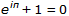
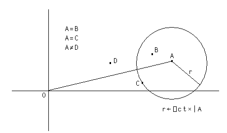

A complex number is a number consisting of a real and an imaginary part which is usually written in the form a+ bi, where a and b are real numbers, and i is the standard imaginary unit with the property i2= −1.
Dyalog APL adopts the J notation introduced in IBM APL2 to represent the value of a complex number which is written as aJb or ajb (without spaces). The former representation (with a capital J) is always used to display a value.
2+¯1*.5 2J1 .3j.5 0.3J0.5 1.2E5J¯4E¯4 120000J¯0.0004
The arithmetic primitive functions handle complex numbers in the appropriate way.
2j3+.3j.5 ⍝ (a+bi)+(c+di) = (a+c)+(b+d)i 2.3J3.5 2j3-.3j5 ⍝ (a+bi)-(c+di) = (a-c)+(b-d)i 1.7J¯2 2j3×.3j.5 ⍝ (a+bi)(c+di)= ac+bci+adi+bdi2 ⍝ = (ac-bd)+(bc+ad)i ¯0.9J1.9
The absolute value, or magnitude of a complex number is naturally obtained using the Magnitude function
|3j4 5
Monadic + of a complex number (a+bi) returns its conjugate (a-bi) ...
+3j4 3J¯4
... which when multiplied by the complex number itself, produces the square of its magnitude.
3j4×3j¯4 25
Furthermore, adding a complex number and its conjugate produces a real number:
3j4+3j¯4 6
The famous Euler's Identity may be expressed as follows:
1+*○0j1 ⍝ Euler Identity 0
From Version 13.0 onwards, the implementation of X*Y (Power) gives a different answer for negative real X than in all previous Versions of Dyalog APL. This change is however in accordance with the ISO/EEC 13751 Standard for Extended APL.
In Version 13.0 onwards, the result is the principal value; whereas in previous Versions the result is a negative or positive real number or DOMAIN ERROR. The following examples illustrate this point:
¯8 * 1 2 ÷ 3 ⍝ Version 12.1 ¯2 4 ¯8 * 1 2 ÷ 3 ⍝ Version 13.0 1J1.732050808 ¯2J3.464101615 * (1 2 ÷ 3) × ⍟ ¯8 ⍝ Version 13.0 1J1.732050808 ¯2J3.464101615
The basic set of circular functions X○Y cater for complex values in Y, while the following extended functions provide specific features for complex arguments. Note that a and b are the real and imaginary parts of Y respectively and θ is the phase of Y..
| (-X) ○ Y | X | X ○ Y |
| -8○Y | 8 | (-1+Y*2)*0.5 |
| Y | 9 | a |
| +Y | 10 | |Y |
| Y×0J1 | 11 | b |
| *Y×0J1 | 12 | θ |
Note that 9○Y and 11○Y return the real and imaginary parts of Y respectively:
9 11○3.5J¯1.2 3.5 ¯1.2 9 11∘.○3.5J¯1.2 2J3 3J4 3.5 2 3 ¯1.2 3 4
In comparing two complex numbers X and Y, X=Y is 1 if the magnitude of X-Y does not exceed ⎕CT times the larger of the magnitudes of X and Y; geometrically, X=Y if the number smaller in magnitude lies on or within a circle centred on the one with larger magnitude, having radius ⎕CT times the larger magnitude.
 As with real values, complex values sufficiently close to Boolean or integral values are accepted by functions which require Boolean or integral values. For example:
2j1e¯14 ⍴ 12 12 12 0 ⍱ 1j1e¯15 0
Note that Dyalog APL always stores complex numbers as a pair of 64-bit binary floating-point numbers, regardless of the setting of ⎕FR. Comparisons between complex numbers and decimal floating-point numbers will require conversion of the decimal number to binary to allow the comparison. When ⎕FR=1287, comparisons are always subject to ⎕DCT, not ⎕CT - regardless of the data type used to represent a number.
This only really comes into play when determining whether the imaginary part of a complex number is so small that it can be considered to be on the real plane. However, Dyalog recommends that you do not mix the use of complex and decimal numbers in the same component of an application.